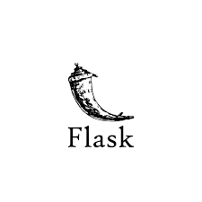

AWS Cloud
Key Concepts: Cloud Computing, AWS Global Infrastructure, Networking, Storage, and Security
- Completed AWS Cloud Foundations course.
- Understanding of core AWS services and cloud concepts.
- Familiar with cloud networking, storage, and best practices.
Docker
Technologies: Docker, Docker Hub
- Created and managed Docker containers.
- Pushed and pulled images to Docker Hub.
- Converted React applications into Docker images.
- Automated container builds using Jenkins.
CI/CD & Version Control
Key Technologies: Git, GitHub, GitHub Actions
- Used Git for version control: pushed, pulled, and cloned repositories.
- Automated builds and deployments using GitHub Actions.
- Ran CI/CD pipelines for continuous integration and code quality improvement.
Ubuntu Linux
Key Technologies: Ubuntu, Linux CLI
- Used Linux command-line interface (CLI) for system interaction.
- Navigated the file structure and managed files in Ubuntu Linux.
- Ran applications and managed processes through the terminal.
Java Programming
Key Skills: Data Structures, Algorithms
- Practiced coding on LeetCode, GeeksforGeeks, HackerRank, and CodeChef.
- Developed problem-solving skills using Java for DSA challenges.
- Participated in competitive programming to enhance algorithmic thinking.
Jenkins
- Created pipelines for automated testing and deployment.
- Integrated Jenkins with Docker to build and manage containerized applications.
- Automated CI/CD workflows to improve development efficiency.
- Practiced automation tasks using Jenkins for personal projects.
Python Programming (Beginner)
Key Technologies: Python, Shell Scripting
- Currently learning Python for automation tasks in DevOps.
- Writing basic scripts to interact with cloud infrastructure and services.
- Exploring Python syntax and data structures for DevOps automation.

Flask (Intermediate)
Key Technologies: Flask, Python
- Developing web applications using Flask framework.
- Utilizing `render_template` and `url_for` for dynamic routing and templates.
- Integrated Flask applications with MySQL for data storage and retrieval.

MySQL (Intermediate)
Key Technologies: MySQL, SQL Queries
- Proficient in writing and optimizing SQL queries.
- Practical experience in integrating MySQL databases with Flask applications.
- Experienced in designing and managing database schemas for web applications.
Terraform (AWS Automation - Learning)
Key Technologies: Terraform, AWS
- Learning to automate AWS infrastructure provisioning using Terraform.
- Exploring Infrastructure as Code (IaC) concepts.
- Automating AWS services like EC2, S3, and IAM through Terraform scripts.
UI Design
Key Technologies: Figma, Canva
- Designed intuitive user interfaces for web and mobile applications.
- Created wireframes, prototypes, and mockups using Figma.
- Collaborated with developers to implement design concepts.